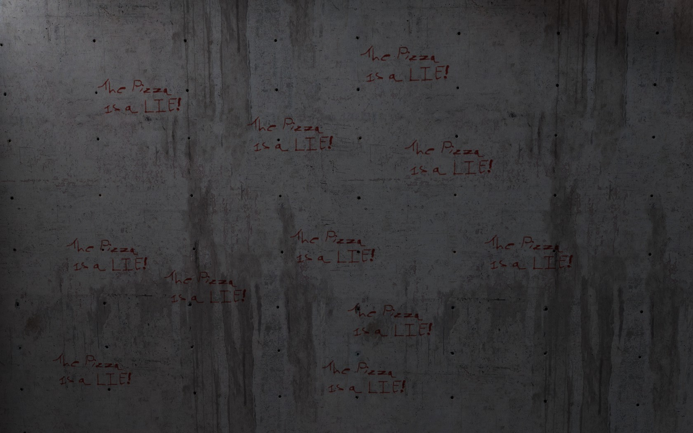

I was messing around in audiacity with background.mp4 and I changed the pitch to 150hz(Frequency of a human voice) and I heard something that sounds like morse.
I’ve attached the file of the audio with the pitch changed.
background2.zip (76.5 KB)
I ran the same conversion and listened to it–that is some fast Morse code if that’s what it is. We’d probably need someone who knows it by heart to listen to that to confirm for sure what it says. Slowing it down might distort it too much.
People who are experienced(Like 20 years of practice) at morse can send it insanley fast , I belive the record is 140 Words Per Minute. Even so, If this is morse, then it is most likley generated by a computer. Some good morse decoding software is CWget if anyone wants to try decoding it.
Download Link for CWget:https://www.dxsoft.com/en/products/cwget/
It’s possible that it’s Morse code, but I’ve worked with the file for a while now and all I get is gibberish. Granted, I get different letters, but it seems more of a fluke than anything else. The issue I have is that it is too rapid-fire to be Morse, I think–even when it’s slowed down, it’s still too repetitive to be Morse (in my opinion). Still possible, but someone more apt at unmasking the sound than I will have to take it from here.
[spoiler]
[code=‘pizzalist.txt’]background01:
decals/c2a4x_pizzalie_graffiti: -1424 9279.23 31.1351
background02:
decals/c2a4x_pizzalie_graffiti: 933.211 1778.45 448
background03:
decals/c2a4x_pizzalie_graffiti: 877.39 17.2209 1406.8
background04:
decals/c2a4x_pizzalie_graffiti: 288.63 320 35.8286
background05:
decals/c2a4x_pizzalie_graffiti: 1306.62 -980.002 -123.59
models/props_canteen/pizza_box.mdl: 1304 -1024 -153
background06:
decals/c2a4x_pizzalie_graffiti: -512 -569.287 -2106.15
models/props_canteen/pizza_box.mdl: -496 -1512 -2423
background07:
decals/c2a4x_pizzalie_graffiti: 534.649 937.351 -149.763
background08:
decals/c2a4x_pizzalie_graffiti: -848 640.79 277.068
models/props_canteen/pizza_box.mdl: -638.676 391.272 -73.7749
background09:
decals/c2a4x_pizzalie_graffiti: 2882.5 -1024 240.401
background10:
models/props_canteen/pizza_box.mdl: -1470.74 -1033.8 -220.578
decals/c2a4x_pizzalie_graffiti: -1429.06 480 322.746
decals/c2a4x_pizzalie_graffiti: -1348 480 385.327
decals/c2a4x_pizzalie_graffiti: -1566.85 480 430.045
decals/c2a4x_pizzalie_graffiti: -1595.59 480 315.546
decals/c2a4x_pizzalie_graffiti: -1387.84 480 269.476
decals/c2a4x_pizzalie_graffiti: -1291.63 480 319.204
decals/c2a4x_pizzalie_graffiti: -1458.87 480 402.366
decals/c2a4x_pizzalie_graffiti: -1522.54 480 292.418
decals/c2a4x_pizzalie_graffiti: -1610.97 480 228.147
decals/c2a4x_pizzalie_graffiti: -1406.43 480 226.742
decals/c2a4x_pizzalie_graffiti: -1379.01 480 449.491
background11:
models/props_canteen/pizza_box.mdl: 2407.16 -1050.04 -271.775
decals/c2a4x_pizzalie_graffiti: 2992 -1869.25 -187.709
decals/c2a4x_pizzalie_graffiti: 2856 -78.6705 9.4848
decals/c2a4x_pizzalie_graffiti: 1824 -1786 -244
background12:
decals/c2a4x_pizzalie_graffiti: -1106.41 1939.51 -1758.62
decals/c2a4x_pizzalie_graffiti: -1751.83 120.922 -1737.52
models/props_canteen/pizza_box.mdl: -3679.83 2652.08 1321
models/props_canteen/pizza_box.mdl: -3679.39 2783.87 1312.22
models/props_canteen/pizza_box.mdl: -3787.11 2738.79 1312.22
models/props_canteen/pizza_box.mdl: -3573.8 2678.37 1312.22
models/props_canteen/pizza_box.mdl: -3687.61 2457.59 1312.22
models/props_canteen/pizza_box.mdl: -3912.47 2468.5 1312.22
models/props_canteen/pizza_box.mdl: -3935.43 2780.21 1312.22
models/props_canteen/pizza_box.mdl: -3733.33 2861.61 1312.22
models/props_canteen/pizza_box.mdl: -3519.22 2580.52 1312.22
models/props_canteen/pizza_box.mdl: -3568.73 2331.33 1312.22
background13:
decals/c2a4x_pizzalie_graffiti: -894.351 -1047.18 -382
background14:
decals/c2a4x_pizzalie_graffiti: 344 1413.71 -921.91
decals/c2a4x_pizzalie_graffiti: 344 1410.43 -863.767
decals/c2a4x_pizzalie_graffiti: 344 1482.74 -929.483
decals/c2a4x_pizzalie_graffiti: 344 1479.22 -862.519
decals/c2a4x_pizzalie_graffiti: 344 1412.53 -796.695
decals/c2a4x_pizzalie_graffiti: 344 1483.23 -797.234
bm_c0a0a:
decals/c2a4x_pizzalie_graffiti: 5086.06 2884 -1041.58
decals/c2a4x_pizzalie_graffiti: 4441.37 2636 -51.087
decals/c2a4x_pizzalie_graffiti: 3012 3532 -356
bm_c0a0b:
decals/c2a4x_pizzalie_graffiti: -280 6513.08 -1328.65
decals/c2a4x_pizzalie_graffiti: -789.627 2504 -1734.07
decals/c2a4x_pizzalie_graffiti: -726.279 2760 -1738.78
decals/c2a4x_pizzalie_graffiti: 889 -2819.31 -171.781
decals/c2a4x_pizzalie_graffiti: 426 -6434 169.326
decals/c2a4x_pizzalie_graffiti: 1952 -3212.98 189.53
bm_c1a0a:
decals/c2a4x_pizzalie_graffiti: -1362.79 -704.532 645.904
decals/c2a4x_pizzalie_graffiti: 930.802 -2512 -1115.2
bm_c1a1b:
decals/c2a4x_pizzalie_graffiti: -1091 -1041.59 704
bm_c1a1c:
decals/c2a4x_pizzalie_graffiti: -896.029 -2248 -942.568
decals/c2a4x_pizzalie_graffiti: -1525.62 -2272 -80.3711
decals/c2a4x_pizzalie_graffiti: -1916 -2549.71 -1095.36
bm_c1a1d:
models/props_canteen/pizza_box.mdl: -5085.17 -4860.94 -3767
bm_c1a1e:
decals/c2a4x_pizzalie_graffiti: -3768.3101 -7200 -3172.1499
bm_c1a2b:
models/props_canteen/pizza_box.mdl: -1974 -876 297
bm_c1a2c:
decals/c2a4x_pizzalie_graffiti: -1708 -400.891 209.779
bm_c1a3a:
decals/c2a4x_pizzalie_graffiti: -1891.28 911.404 -128
bm_c1a3b:
decals/c2a4x_pizzalie_graffiti: -2924.46 184.063 176
bm_c1a4a:
decals/c2a4x_pizzalie_graffiti: -2161.79 3488 1613.75
decals/c2a4x_pizzalie_graffiti: -1963.55 -3891.33 -1257.22
decals/c2a4x_pizzalie_graffiti: -32 -5035.6299 -1102.27
bm_c1a4c:
decals/c2a4x_pizzalie_graffiti: -4195.3901 -832.399 -3462.54
bm_c2a1a:
models/props_canteen/pizza_box.mdl: 1096.37 1526.18 9
bm_c2a2a:
decals/c2a4x_pizzalie_graffiti: -40 2769.06 545.5
bm_c2a2c:
models/props_canteen/pizza_box.mdl: -2324 -4856 -6
models/props_canteen/pizza_box.mdl: -2298 -4856 -6
models/props_canteen/pizza_box.mdl: -2274 -4856 -6
models/props_canteen/pizza_box.mdl: -2250 -4856 -6
models/props_canteen/pizza_box.mdl: -2224 -4856 -6
decals/c2a4x_pizzalie_graffiti: 3736.84 -2283.56 126.006
bm_c2a3b:
models/props_canteen/pizza_box.mdl: 3660.96 470.817 65
decals/c2a4x_pizzalie_graffiti: -1140 -776.576 -3296.79
bm_c2a4b:
decals/c2a4x_pizzalie_graffiti: -604.421 -2920 -696.178
bm_c2a4c:
decals/c2a4x_pizzalie_graffiti: -1078.38 -327.876 112
bm_c2a4e:
models/props_canteen/pizza_box.mdl: -223 -545 411
decals/c2a4x_pizzalie_graffiti: 768 1768.31 269.035
decals/c2a4x_pizzalie_graffiti: 547 656 591.355
bm_c2a4f:
decals/c2a4x_pizzalie_graffiti: 1663.49 1984 -333.833
decals/c2a4x_pizzalie_graffiti: 1824 -1786 -244
bm_c2a4g:
decals/c2a4x_pizzalie_graffiti: 1760 1863 -352
bm_c2a4h:
decals/c2a4x_pizzalie_graffiti: -1657.45 -4195.52 -416
decals/c2a4x_pizzalie_graffiti: 2947.11 -1079.26 400
decals/c2a4x_pizzalie_graffiti: 224 -4336 -296
bm_c2a5a:
decals/c2a4x_pizzalie_graffiti: -2299.57 -3250.95 1854.72
decals/c2a4x_pizzalie_graffiti: 727.776 5459.61 1768
bm_c2a5c:
decals/c2a4x_pizzalie_graffiti: -2296.21 -4471.46 -9567.71
bm_c2a5f:
decals/c2a4x_pizzalie_graffiti: 3403.04 439.958 512
bm_c3a1b:
decals/c2a4x_pizzalie_graffiti: -1760.48 1376 -1498.58
models/props_canteen/pizza_box.mdl: -1985 2193 -335
models/props_canteen/pizza_box.mdl: -943.006 1339.03 -1431
bm_c3a2a:
decals/c2a4x_pizzalie_graffiti: 3043.69 -1261.05 -2496
bm_c3a2c:
models/props_canteen/pizza_box.mdl: -800 2913 273
models/props_canteen/pizza_box.mdl: -72.3346 1274.66 1009
models/props_canteen/pizza_box.mdl: -800 2879 273
decals/c2a4x_pizzalie_graffiti: -768 2896.71 309.212
bm_c3a2g:
decals/c2a4x_pizzalie_graffiti: 521 91.41 1615
bm_c3a2h:
decals/c2a4x_pizzalie_graffiti: -327 -1268.59 -945
dm_bounce:
models/props_canteen/pizza_box.mdl: 674 1393 491
dm_subtransit:
decals/c2a4x_pizzalie_graffiti: -64 3387.18 748.73
models/props_canteen/pizza_box.mdl: -7 3373 729
models/props_canteen/pizza_box.mdl: 7 3399 729[/code][/spoiler]
Awesome stuff! The only thing I can add is that there’s a Biodome logo beneath the graffiti on background07. Not the same one that was hidden in the original version (in WGH, among other places), but a new one (to my understanding):

I’m liking that we’re finding this stuff, but I wish I knew for sure whether or not we are supposed to be focusing on the web elements or the new release of the game. The web information was an inundation of probable fluff, potential red herrings and (possibly) useful tidbits, and adding the stuff found within the game to the mix is just far too much. If you look back at previous portions of the ARG, it was straightforward: we had the in-game clues that led us to the Code D solution, then we had the access to the website that led to the multiple IRC and web-based clues. Now we’re all over the place.
Because of this, I imagine that Storm will somehow (likely indirectly) inform us as to which is the correct and current path–if only because it is no longer clear to us. It was hard enough in the first gate puzzle without having the path leading in a million different directions.
EDIT: This article about Kryptos indicates that the statue has a lot of similarities to our ARG, and it was even pointed out directly via coordinates in the IRC clues; here are some of the comparisons I found in the article, as well as some possible attributes of the ARG I thought of whilst reading:
1. But in recent years, another text has been the subject of intense scrutiny inside the Company and out: 865 characters of seeming gibberish, punched out of half-inch-thick copper in a courtyard.
Our HALOS.txt file isn’t too far from that number of characters.
2. There, copper plates near the entrance bear snippets of Morse code
We’ve had at least one instance of Morse code in the ARG.
3. The heart of the piece, though, is the encrypted text, scrambled, Sanborn says, by “a coding system that would unravel itself slowly over a period of time.”
For the past year or so, all we’ve heard is “time will reveal all.” The similarity here is uncanny. Is it possible that the HALOS.txt coding system will function in the same manner? Storm mentioned that openSSL would not help us–this suggests to me that it’s entirely possible he has created his own encryption/coding method.
4. After experimenting with a range of techniques, including poly-alphabetic substitution, shifting matrices, and transposition, the two arrived at a form of old-school, artisanal cryptography that they felt would hold off code breakers long enough to generate some suspense.
Another reference to an encryption method that isn’t universally known but invented by the creator.
5. There’s a reference to a magnetic field and information transmitted to a specific latitude and longitude—geo-coordinates for a location a couple of hundred feet south of the sculpture itself (a spot where nothing of apparent interest lies).
Something similar occurs with at least one of the coordinates given to us through the IRC clues.
6. There are endless theories about how to solve it. Is access to the sculpture required? Is the Morse code a clue?
Technically, the Morse code segment from the radio could be a clue as to how to solve this cipher. Again, “time reveals all” might suggest that the methodology behind the encryption of the HALOS.txt file will come to light over time. Even if it is not a cipher devised by Storm, it may include steps (such as transposition, substitution, etc.) that reveal the actual hex code that can then be decrypted using our BENALOHPAILLIER or other similar password.
Anyhow, I found the article very interesting, especially because Kryptos has been directly alluded to at least twice throughout the life of the ARG–“The CIA couldn’t crack it” and the coordinates pointing to the statue.
EDIT 2: Something else I found out with a little research:
The “21 into 1” clue could refer to triangular numbers, and it’s suggested that Carl Freidrich Gauss was one of the first to propose their existence. Does the name look familiar? Well, it should–it’s another name for that badass gun you’ve been shooting all those baddies with in Black Mesa.
Great work, thanks!
I’ve cut away some parts, and left the sections that stood out to me. According to the coordinates, these are clusters of pizza boxes and graffiti, relatively close to eachother. Judging from the coordinates, I’m guessing background12 is the one we’ve seen multiple screenshots of in these past few thread pages, and background14 is the underwater one. Here’s a post with screenshots of both groups I mean. And bm_c2a2c could very well be the one we’ve found years ago, 5 pizza boxes next to each other under the Biodome logo.
But what about background10? Does anybody have a screenshot of this?
If someone could go take a look and make a screenshot of it, I’d be very happy. =)
The biggest group of pizza boxes we’ve found before the new group of 10 in the background (background14?) was right below the Biodome logo. Now there’s this one. I’m not saying it’s definitely important, but… perhaps it’s time we start looking for more instances of that logo. Perhaps @flavrans9 can do his magic again? =3
As for the rest: no matter what, the one thing we’ve been pointed towards more than anything else so far is pizza. Even in this new Steam release, we’ve seen more pizza, and not just one or two either. Loads of pizza everywhere. While I’m sure there’s some significance to the other clues in one way or another, I can’t help but shake the feeling we need to look at what’s up with these damn pizza’s. They’re the only clue I know of that has been updated and made relevant in the past few months - even kxbm and bmrf are roughly 4 months old now, and some of the stuff we keep digging up has run cold for years.
Hello everyone!
I am new to the forums, and just made this account to follow up on something I found, and i felt I needed to post here.
I just bought Black Mesa through steam, and was playing through the first part of the game before you get the HEV suit. I was walking around Sector C and found a lone scientist, sitting, facing a wall.
As i approached him, he said to me, “Hello Dr Horn”.
Now, again i have been watching this forum for a while, but didnt know if this is relevant / has already been mentioned / would be of any use. I am sorry if this is the case!
I am able to go back and try and get a screenshot of the scientist, if you so want me to! I just need to know if its worth your or my time 
Good luck to you all, I really really looking forward to this being solved. Hopefully Xen will help bring some more clues!
KEEP AT IT!
~Mish
The wall of pizza lies:

[spoiler]
[code=‘Biodome_logos.txt’]background07:
decals/lab1_flr8d: 568 952 -192
background11:
decals/lab1_flr8d: 2408 -1512 -272
models/props_questionableethics/qe_logo_sign_200.mdl: 2960 -1184 61
models/props_questionableethics/qe_logo_sign_200.mdl: 1856 -1184 61
bm_c0a0a:
decals/lab1_flr8d: 3020 3532 -298
bm_c0a0b:
decals/lab1_flr8d: -704 2728 -1824
bm_c1a0a:
decals/lab1_flr8d: 1624 3712 416
bm_c1a1b:
decals/lab1_flr8d: -1120 -1024 384
decals/lab1_flr8d: -1536 440 480
bm_c1a1d:
decals/lab1_flr8d: -5088 -4912 -3713.8799
bm_c1a2b:
decals/lab1_flr8d: -1991 -862.715 321.965
bm_c1a3a:
decals/lab1_flr8d: -1824.02 928.28 -128
bm_c1a3b:
decals/lab1_flr8d: -2838 178 176
bm_c1a3c:
decals/lab1_flr8d: -2368 172 -959
bm_c1a4a:
decals/lab1_flr8d: -1963.6801 -3788 -1240
bm_c2a1a:
decals/lab1_flr8d: 1073.05 1515 35
bm_c2a2c:
decals/lab1_flr8d: -2272 -4880 68.1817
bm_c2a3b:
decals/lab1_flr8d: 3662.5901 511 83.0824
bm_c2a4b:
decals/lab1_flr8d: -617.767 -2920 -741.628
bm_c2a4c:
decals/lab1_flr8d: -1078 -270 112
bm_c2a4e:
models/props_questionableethics/qe_logo_sign.mdl: -80 -768 592
bm_c2a4f:
decals/lab1_flr8d: 2408 -1512 -272
models/props_questionableethics/qe_logo_sign_200.mdl: 2960 -1184 61
models/props_questionableethics/qe_logo_sign_200.mdl: 1856 -1184 61
models/props_questionableethics/qe_logo_sign.mdl: 440 -1240 -208
bm_c2a4h:
models/props_questionableethics/qe_logo_sign_200.mdl: 2960 -1184 61
models/props_questionableethics/qe_logo_sign_200.mdl: 1856 -1184 61
bm_c2a5a:
decals/lab1_flr8d: -2376 -3136 1854.72
bm_c3a1b:
decals/lab1_flr8d: -1760 1312 -1560
decals/lab1_flr8d: -1984 2172 -258.195
decals/lab1_flr8d: -976 1339.8199 -1392.4399
bm_c3a2a:
decals/lab1_flr8d: 3097 -1323 -2496
bm_c3a2c:
decals/lab1_flr8d: -87 1262.61 1046.35
bm_c3a2h:
decals/lab1_flr8d: 1808 -284 64
decals/lab1_flr8d: 1018 -1536 72[/code][/spoiler]
I don’t think this has been found before. Could you tell us more specific location, I wanna check the old mod version?
@flavrans9 - Thanks again! <3
Let’s hope it helps someone figure this all out. It doesn’t seem to be a coincidence that the Superbus logo and pizza’s keep showing up together.
@_Mish - I don’t think it’s been found, no. Screenshots would be very much appreciated =)
I just checked that BM Steam launch livestream footage again, and found another clue that’s been “refreshed” in the past few months. A few seconds after my previously linked quote, and still discussing ARG stuff, Horn says:
I for one didn’t even realize it was Dr. Horn that invented the Tau Cannon until he pointed it out. So I wondered, why was this apparently important enough for him to mention first, before Horn’s shack and the pizza’s?
I realized there’s probably a link between the Tau Cannon, or “(Accelerated) Lepton Optronic Linearity Cannon”, also known as the XVL 1456, and the Laser Optronic Linear Inducer Cannon. They seem rather similar (the Tau Cannon is a portable version of the big one?) so I’m guessing Horn had to do with that one as well. Which, obviously, would help explain why that last one was used as a password by Horn. The wiki message quoted by @Gunsrequiem a page back also references the Tau Cannon. If it’s really stormseeker that posted it, why would he include the Tau Cannon reference? And then I remembered the recent Steam launch trailer. Guess what’s featured front and center? That’s right, the Tau Cannon (called “XVL 1456” in the video). … but, why? I mean, in-game the military never uses it, and it’s still an experimental weapon, likely to explode in your face. Judging by the game alone it doesn’t seem like it’s left Black Mesa’s testing facilities at all so far, yet here it is.
Maybe I’m looking into this too deep. But at the off chance I’m not: does anybody remember anything related to the Tau cannon that I haven’t mentioned yet?
Although that was something I took notice of as well, it didn’t come as a complete surprise to me, because, you know, he made the whiteboards, one of which has a detailed diagram of it.
But nonetheless, it’s interesting that he said that, because if we look at his user profile on the official wiki, it says:
And look, there’s the key to the Code D puzzle. I’m wondering if that was a clue, and no one, apparently, noticed it back then. The page hasn’t been changed since January 3, 2011.
So, not only is he the proud creator of the Laser Optronic Linear Inducer Cannon, he’s also the developer and inventor of the Tau Cannon.
In the beginning of the ARG, there was speculation that Dr Horn was the one who died in the Tau Cannon overcharge incident, because of something that was found in the decompiled map. This was briefly mentioned on Dr Horn’s wiki page on the ARG wiki. But then wiki user Dr Horn added something to the page.
On the Tau Cannon whiteboard, this is written:
One idea that popped into my mind some time ago, was: What if it was Dr Welsh who deliberately rigged the fuse so that the Tau Cannon would overcharge, so that the next poor bugger who used the Tau Cannon would meet an unfortunate demise, and the plan was that this poor bugger would be Dr Horn? Or, it could have been the other way around. In the end, some innocent scientist got caught in the feud.
In any case, it looks like the Tau Cannon is part of this, one way or another.
I tried decoding that file and I didn’t get anything. It seems like there was too much background noise for the program to decode.
Good stuff, @Jake R. As I mentioned with the “21 into 1” clue, triangular numbers were noted by Gauss, who was also involved with the Gauss rifle, another name for the Tau cannon. Perhaps this is our clue as to what composes the HALOS decryption key.
When I have him speak he says “Hello Doctor Cross”. Every time I push the the ‘use’ key he calls me Doctor Cross.
I went back and tried it with the original release of BM and he doesn’t do that.
Setpos 117.648140 3261.575195 480.031250;setang 4.950014 56.700199 0.000000

I’m bothered by the XOR exception method mentioned by @flavrans9 in a post to which Storm (as Code) commented positively on. Furthermore, I had mentioned converting the hex to binary shortly before Storm mentioned someone was close. We also have the “1001085139140914” code which could refer to binary with all the 1s and 0s within it. The method for encrypting XOR includes a binary shift using a key in binary. There are few tools that are reliable online, which would support Storm’s comment against openSSL. I’m going to try a few of these by hand as they are very simple to do and check.
I looked at maps “background10” and “background07” on the mod version and i unlike the steam version, there wasn’t anything related to the arg in the mod version of the maps.
Something is going on here.
I also cant help but to notice that the wall of “the pizza is a LIE!” graffiti in map " background10" looks to be arranged in some kind of code or pattern.

{kind=link}
{kind=link}
{kind=link}
Isn’t that the same pattern the pizzas were in in that back room earlier?
It looks similar, but it’s not the same pattern. Here, there are 11 pizza lie graffitis, but in the other map, there were 10 pizza boxes.
Just a quick thought. Remember the canvas paintings, which had to be composited on top of each other to yield Code B? Maybe we need to do something similar with the “field of pizza boxes” and the “wall of pizza lie graffitis”.